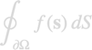
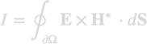

quadboundary
The quadboundary class allows the integration over a single boundary

Contents
Initialization
% set up quadrature object % tau - boundary elements % 'quad3' - quadrature rules for triangular elements % 'quad4' - quadrature rules for quadrilateral elements (not implemented yet) % 'memax' - slice integration into bunches of size MEMAX obj = quadboundary( tau, PropertyPairs );
After initialization obj is a vector containing the different integrators for the boundary. Each integrator is for a unique boundary shape (triangular or quadrilateral) and for a unique material composition at the inside and outside.
For the triangle quadrature rules quad3 we provide the function
% integration rules for unit triangle % rule - integration rule ranging from 1 to 19 % refine - subdivide unit triangle REFINE times quad = triquad( rule ); quad = triquad( rule, 'refine', refine );
Methods
% material properties mat = obj.mat; % material indices at boundary inside and outside inout = obj.inout; % indices of TAU in OBJ.TAU ind = indexin( obj, tau ); % total number of integration points n = npts( obj ); % use RULES structure instead of PropertyPairs rules = quadboundary( PropertyPairs ); obj = quadboundary( tau, rules ); % set integration rules, same PropertyPairs as for initialization obj = setrules( obj, PropertyPairs );
The quadboundary object can be evaluated for boundary elements using linear or Raviart-Thomas shape elements. For the linear shape elements, tau is a BoundaryVert object.
% evaluate integrator % pos - quadrature points [ntau,nw,3] % w - quadrature weights [ntau,nw] % f - linear shape function [ntau,nw,npoly] [ pos, w, f ] = eval( obj ); % interpolate from vertices to quadrature points vi = interp( obj, v );
For the Raviart-Thomas shape elements, tau is a BoundaryEdge object.
% evaluate integrator % pos - quadrature points [ntau,nw,3] % w - quadrature weights [ntau,nw] % f - Raviart-Thomas shape function [ntau,nw,npoly,3] % fp - derivative of F [ntau,nw,npoly] [ pos, w, f ] = eval( obj ); % interpolate from edges to quadrature points vi = interp( obj, v );
Examples
Suppose that want to compute the flux of a plane wave with electromagnetic fields , through a closed boundary

% integration rules rules = quadboundary.rules( 'quad3', triquad( 11 ) ); % set up integrators, use previously computed boundary elements TAU quad = quadboundary( tau, rules ); % initialize output I = 0; % loop over boundary integrators for it = 1 : numel( quad ) % get integration points and weights [ pos, w ] = eval( quad( it ) ); % normal boundary vector nvec = vertcat( tau( it ).nvec ); % compute electromagnetic fields at quadrature positions [ e, h ] = fun( pos ); % update output ... end
- demoquad01.m - Plot quadrature rules provided by nanobem toolbox.
Copyright 2022 Ulrich Hohenester